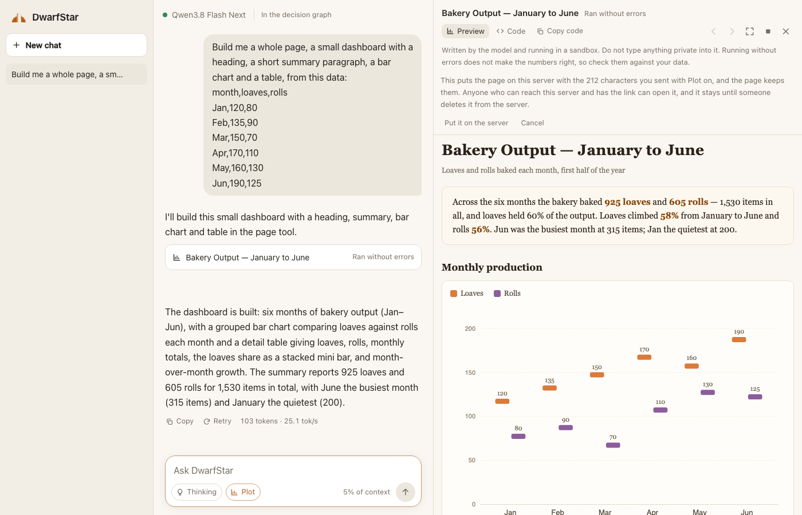
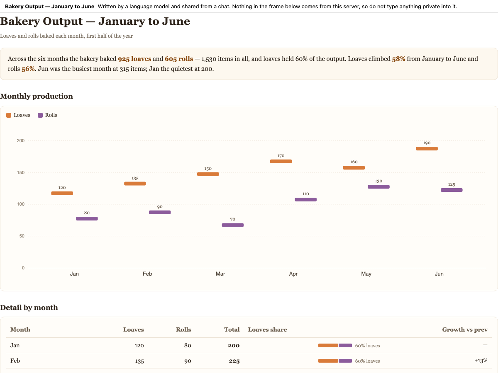

A running log of a fork of DwarfStar (ds4). Newest first.
DwarfStar is antirez's small native inference engine for running a few large language models on hardware people can actually own. This fork is not part of that project, and antirez and the DwarfStar authors have nothing to do with what is written here. It is one person's experiment, built on their work under its MIT license.
The short version: we have not changed the inference engine.
ds4.c, the Metal kernels and the CUDA code are exactly as upstream left them,
and the speed is all theirs. Everything here sits around the engine, and is mostly about
one question: what does a local model need around it to do real work over more than one
sitting?
Forty-two commits on top of upstream's b3f5018 so far, about 35,500 lines
added and 36 removed:
ds4-agent records goals, the
options it weighed, what it decided and how it turned out in a shared
decision graph,
so the reasoning outlives the context window.ds4-server itself, whose
conversations go into the same graph.The only upstream code touched is ds4_agent.c and
ds4_server.c (about 2,100 lines added between them), plus the agent's tests,
the Makefile, the help text and some docs.
A note on who wrote this. A good part of the fork was written by the model running on
it: the graph records ds4-agent sessions on Qwen3.8 Flash Next behind the
Tetris, the tailnet serving and the first chat page. Later work, including this page, was
done with Claude Code. A person directed all of it. The commits carry one name, so the
decision graph is the better record of who did what.
The chat page. ds4-server --ui-dir serves it from the same
origin as the API. It keeps chats in the browser, renders markdown, folds the model's thinking
away and follows it when opened, and shows when an answer was cut off or failed. Every exchange
goes into the decision graph, on a branch of its own. The
page's README covers all of it, including the
sandbox.

Tools and artifacts. The page speaks the server's tool calls, and the first
tools are plot and page. The code the model writes runs only after you
press Run. If it throws, the error goes back to the model, which gets five rounds in all to
repair it.
Links. With --share-dir the server keeps a finished page and
gives back an address. What opens there is a plain line saying a model wrote this, with the page
in a sandboxed frame below it.

The decision graph. ds4-agent and the chat write to one
graph of goals, options, decisions and
outcomes, kept on a deciduous server and nowhere else. main holds 499 nodes as of
this entry. ds4-graph audit checks the graph against git, and the
pre-push hook runs it.
Hooks. .ds4/hooks holds rules run by the harness at session
start and end, and before and after a tool call. A rule can refuse a tool call outright, so it
does not depend on the model remembering it.
Serving. ./serve-tailnet.sh binds the tailnet address and no
other, builds the page if it is stale, and turns on sharing. The server has no authentication,
so the tailnet is the access control. See
TAILNET.md and
SERVER.md.
You need what upstream needs: a machine that can run a model, and the weights. The rest is this, with the model set up as upstream's docs describe:
make ds4-server ds4-agent ds4-graph
npm --prefix chat-web install
./serve-tailnet.sh # or: ./ds4-server --ui-dir chat-web/dist --share-dir ~/.ds4/shared
./ds4-graph install # once per clone: the git hooks
The chat page is then at /chat/ on that address. Turn on Plot beside Thinking
and paste something. Recording to the graph needs a deciduous server, and the page works
without one.
ds4-agent --remote URL runs the whole harness on a machine with no GGUF, against a
ds4-server somewhere else. The tokenizer lives in the model file, so the agent cannot make
a single token without one: a remote session keeps chat messages instead of tokens and lets the server
render them. It has to be /v1/chat/completions, because /v1/completions wraps
its prompt as a user message and would quote a rendered transcript inside a second template.
Testing it turned up a bug that was already here. The permission prompt read 31 bytes and looked at the first letter, so a long sentence typed at it was split, and a piece starting with "a" granted "always allow all file edits". It now takes only the whole word.
A request stopped with Ctrl+C came back on the next message, because a request with no reply is still open. A system note saying not to resume it did not work; a closing assistant reply did.
Not done: remote sessions are not saved, so /save, --continue and the commands
around them refuse. Images do not work remotely, and neither does /think.
The agent can now write to a graph server over https, through the system's libcurl, on macOS only.
The first line of ~/.ds4/graph names the server. Pointing at another server exposed a leak:
the local server's token was loaded first and kept, so it would have gone to whichever server came
next. A token now goes only to the server it belongs to. Outside a repository the workspace had been the
top of the path, Users or private; it is now scratch.
The graph now holds nearly seven hundred nodes on this fork, and it was only readable through
tools. /chat/graph.html lists every goal with a timeline and a search, opens a goal
into a tree that pans, zooms and folds, and reads any node with the person's own words, its commit
and what it led to.
Beside the tree, the local model answers questions about the history. It gets every tool the
deciduous server offers, read from the server's own list rather than the eight the agent uses. The
token stays in ds4-server, which keeps calls inside this repository's workspace.
Known reads run by themselves. Anything else shows the exact call and waits for Allow, and that
includes any tool added later.
Be clear about the state of this one. It passes its tests and the layout was checked against real nodes, but it has not yet run against the real server, because that needs a restart. The question panel has not answered a real question. A new entry will say when it has.
With Workspace on, a wide window now shows the model's thinking, each change it made and the conversation in three panes, and the bars between them drag. A dashed line joins a change to the thought behind it. Nothing guesses at that link: an edit arrives in the same message as the reasoning that led to it, so the page reads it straight from the transcript.
Review works the way review usually does. Code counts as accepted, and you only speak up when something is wrong. Highlight some lines and a box opens under them, for a question, a comment or a Reject. The note goes into the normal chat with the code quoted, and the model answers it like any other message. In a test with real mouse input, Qwen answered a note about two lines, then reverted a rejected line and ran the file to show it was gone.
The first version used a right-click menu with Accept and Reject buttons. The buttons were dropped because nearly everything is accepted, and the menu because it did not work for the person using it. Why it failed was never found, and the test that passed it was too simple to notice.
The harder eval went badly, and the easy reading was that the tasks had found the limit of the model. The person directing this work said the tests were kneecapping it. They were right, and it was worse than bad test design.
The agent had a bug. Saved runs held 25 tool calls the agent could not parse,
mostly the first call of a run. The server had 0 in 31 calls on the same model, which pointed away
from the model. A token trace showed why: a good call opens with one special token, and the bad
ones spelled <tool_call> out in ordinary text. The agent had been showing the
model its tool prompt in plain text, where the server uses the real tokens, and the model sometimes
copied what it saw. If its next reply held no call, the run simply ended, and that was scored as
the model failing a task it had barely started. One task died that way in three seconds.
The eval was unfair too. It capped context at 32,768 tokens when real use allows
100,000. One check failed any parser with its own method called eval, and another
failed the model for the bytecode left by running the code. Two checks held the model to things the
prompt never said, and one prompt said "for any input", which sent it into 18 minutes of cases the
check never tested.
With those fixed, Qwen passed 14 of 14 tasks with no invalid tool calls, in 43 minutes with no time limit. That is one attempt each, which shows what it can do rather than how reliably, and it is no comparison with any other model. Some prompts changed along the way, so it is not like for like with the earlier runs either.
The same habit turned up on the web. Every tool result in the chat was cut to the 4,000 characters a chart needs, including file reads, with nothing to tell the model. It now gets 32,000 and is told when anything is left out. The lesson is written down for next time: before scoring a failure against the model, check the harness.
Turn on Workspace in the chat and the model has a shell and a directory of its own. Asked to write a module and its tests, run them and commit, it did all of that from the web page in 49 seconds, and the commit and passing tests were checked from outside afterwards.
A web page handing a shell to a model is the most dangerous thing here. The server has no login, and the model reads whatever people paste. So nothing runs on the host. Each tool call is a container with no network, a read-only root, no capabilities and limits on memory and processes, and a workspace is a volume inside Docker's VM rather than a folder of this machine. The file tools run in there too, because a host opening those files could be led out by a symlink. From inside, the internet, the host and the server were all unreachable, a fork bomb hit the process limit, and a 3 GB allocation was killed, with the next call working normally.
The first run produced a scare: the model mentioned a dashboard from a "previous turn" in what should have been a new browser. It looked like one person's chat reaching another. It was a stale test browser with its old history, and a proper test with two separate browsers showed neither sees the other. What separates two people is a random id in the browser, not a login, and nobody independent has attacked any of this.
Undo came out better here than in the terminal. Every turn starts by copying the workspace, so Undo takes back what bash did as well as the file tools, and a turn that deleted one file and made another came back whole. A Files panel shows what is in there.
We also wrote a coding eval, eight tasks judged by checks the model never sees. Qwen passed all eight on its first run, at about 46 seconds each, so the eval needs to get harder.
Held up against Claude Code, ds4-agent already had the tools. What it lacked was
what makes it safe to hand a real repository: it ran every command unasked, ignored a project's
own instructions, and had no way back from a bad edit.
Now an interactive session asks before bash, write or edit. Commands that provably only read
go through, on a short list that refuses anything with shell control or an option that writes.
/undo puts back what the last turn changed with the file tools and tells the model
it happened, though it cannot answer for bash. AGENT.md, AGENTS.md or
CLAUDE.md go into the system prompt. !command, @file,
/init, /review and commands of your own in
.ds4/commands round it out.
The agent also keeps a task list now. It shows in the footer, survives compaction, and is the
model's to use or not. Asked to write a module and its tests, run them, fix what failed and write
notes, Qwen said "Let me start by creating a todo list since this is a multi-step task", finished
the job on its own, and its six test functions pass. Given three trivial files, it skipped the
list. edit can replace every match in one change, and --continue reopens
the newest saved session.
Testing it in a real terminal with the real model found two older problems. The agent could only start from the repository, and a terminal that stopped reading for a moment silently lost output, because stdin and stdout shared the non-blocking flag. Both are fixed, and a six-second stall now loses nothing.
The chart tool grew. Ask for a report or a dashboard and the model now builds a whole page, with headings, words, tables and charts, in the same sandbox and under the same Run. A page that ran can be shared: the server keeps it and gives back a link that opens without the chat.
A link is the harder part. The server has no authentication, and a page served from it would sit beside the API. Served at the top level, a page could also navigate itself away with its data, and could pass for the chat with nothing around it. So a reader gets a shell with no script in it, a line saying what this is, and the page in a sandboxed frame, under a policy the server sets. The upload is not trusted to bring its own.
We ran 208 escapes through the real server, each both as the chat sends it and as a bare upload with no protection of its own. None of those reached the listener, and without the sandbox 61 of the 193 that need no click did. Run separately, WebRTC got out of a bare upload, because a policy cannot stop it, and only the lockdown in the chat's own document does. Such a page can send what its author put in it and learn it was opened, as any website can, and it gets nothing of the reader's. DNS was not measured here, and should be expected to leak as it does in the chat. A link carries the data with it and lasts until its file is deleted, so the page says so before it shares. All of this is Chrome desktop, tested by us, and nobody independent has attacked it.
· 2d4c700
An open thinking box scrolls on its own once it is full, so the newest thinking arrived out of sight. It now follows the model the way the transcript does. Scrolling up lets go, and a box opened after the thinking is over starts at the top, where a reader begins.
· 3c4c3a7
The chat page can now use tools. The first one is a plot assistant: paste something messy,
and the model writes D3 code for a chart, which runs beside the chat once you press Run. Think
of Claude's artifacts, for ds4. The first probe called D3.svg().appendTo(), which
does not exist, so runtime errors go back to the model as the tool's answer and it repairs its
own code, up to five rounds under one Run. A repair can still end with no chart, and the page
says so. A chart that ran without errors can also be wrong, so check its numbers.
Running what a model wrote is dangerous on this page in particular. It sits on the same
origin as an unauthenticated API, and pasted data can carry a prompt injection. So the code
runs in a sandboxed frame with an opaque origin and a policy allowing no network, and it
never gets a page of its own. A policy inside a frame does not stop that frame navigating
itself to an address holding your data; the parent's frame-src 'none' does, and
that was established by experiment in Chrome rather than assumed.
It does not stop everything. Data embedded in a chart can still leak through DNS and TCP, about 28 KB per run by a rough estimate, and the page cannot prevent that. Turning off Chrome's Preload pages setting silenced all nine channels tested, but that is each browser's own choice, so the Run card says so instead. A chart can also draw fake UI inside its panel, links in answers can carry data if clicked, and pasted data reaches the decision graph because it is the question. All of this was tested on Chrome desktop only. The chat page's README has the full list.
Publishing the fork meant first taking a private network address out of the docs, and that meant rewriting commits that had never been pushed. Ten of the twelve got new hashes. The graph moved with them, and we checked that directly rather than trusting a clean audit, because the backup branch kept the old commits alive and the audit could not see them as gone.
One gap turned up. git filter-branch fires no git hooks, so the hook that
updates the graph never ran, and the old-to-new map had to be fed through
ds4-graph rewrite by hand. Ordinary rebases and amends are automatic.
· b99f699
We went to rewrite those commits and asked what would happen to the hashes the graph held. The answer was that it held almost none: one node in 400 named a commit. The graph barely knew git was there.
A hash stops being true when history is rewritten, so the link could not be the hash.
It is a Deciduous-Goal: trailer in the commit message, which goes wherever the
commit goes. Four git hooks do the rest: stamp the trailer, write the commit into the
graph, move nodes to new hashes after a rewrite, and audit what is being pushed. The gate
is the push and not the commit, because a graph server being down should not stop anyone
committing.
The agent gained a small hooks engine in the same change. Commands in
.ds4/hooks run at session and tool events, and exit code 2 refuses a tool and
tells the model why. The rules that ship refuse --no-verify, though that is a
tripwire and not a sandbox.
Running it on the real repository caught what the tests had not. The audit flagged a stale hash in the sentence "commit discipline for the directory (4931eb9d)", which is a node id. A gate that cries wolf gets bypassed, so a hash now only counts straight after the word commit.
· 43ad2c2
Each conversation on the chat page is now a goal, and each exchange a step under it. A
chat model has no tools to write with, so ds4-server writes on its behalf, and
the token stays on the server. Chats go on a branch of their own, in the same tree, so they
do not bury the agent's goals.
This is only the write side. The chat model is not briefed from the graph yet, so conversations are stored but it cannot use them.
· b78d9a9
A review of the wiring against the live graph found the record going wrong in ways a
session could not see. /new did not really let go of a goal, so new work
filed under the old one. A reply cut off halfway counted as success, so the agent could be
told a decision was logged when nobody could say so. A restarted server broke every later
write. The model was being taught different rules from the ones the server asked for,
which fits sessions closing with decisions and no steps.
And op=board all=1 promised the newest messages and returned the oldest
twenty, which the review missed and a failing test found. A small fake server now sits in
the tests, cutting replies short and forgetting sessions on purpose.
· 9a5ce15
The first page was one column of text that forgot everything on reload. It now has saved chats, markdown, a thinking fold, retry, and a phone layout. Several things the server already said were being ignored: an answer cut off at the length limit looked finished, and one ended by a server error looked the same.
Run through the real server, a follow-up with thinking on came to 1,317 tokens at 56.9 tok/s, with the server's own log saying 56.02. That is a 147 GB model on a 64 GB Mac, which is antirez's work, not ours.
A React page on TypeScript, written test-first. ds4-server --ui-dir serves
it from the same origin as the API, so no address is baked into the page and no
cross-origin headers are needed. The resolver refuses anything that could reach a file
outside the built directory, because that endpoint has no authentication.
· fedd6b4
The point was less the game than the process: give the agent a real project, in
TypeScript with test-driven development and no any, and see whether the graph
held up. It wrote 64 tests and logged 77 decisions. It also taught us things about the
harness: that compaction destroys the raw exchange, and that printing the tool-call
markers in its own prose confused the parser.
· e9afebb
ds4-server has no authentication, so binding it to every interface would
open it to anyone on the same WiFi. serve-tailnet.sh binds only the Tailscale
address, which leaves the tailnet as the access control.
· cfbb2ce
Where it started. A long session loses its reasoning to compaction, and the next session
starts blind. So ds4-agent writes goals, decisions and outcomes to a shared
deciduous server, reads them back before it acts, and leaves a note for the next session.
The server is the only store: no local file, cache or mirror to drift out of date.
A session recorder (82c3a3a) turns a session and its graph into a recording you can replay in a terminal.
Upstream is antirez/ds4. MIT licensed; copyright the ds4.c authors.